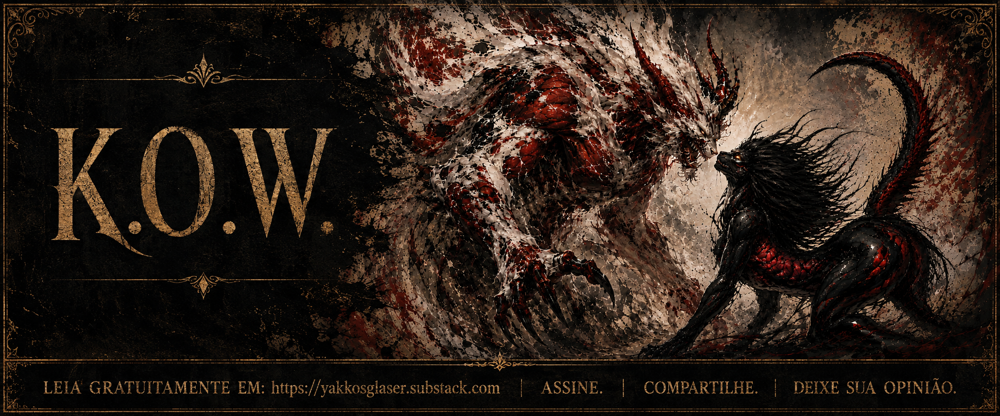

Uma romantasia sobrenatural brasileira.
Em Porto Alegre, criaturas antigas sobrevivem às sombras de um mundo que ainda não sabe que elas existem.
Em publicação
K.O.W. Porto Alegre
Porto Alegre, 2024. Enquanto a cidade se recupera das enchentes, um assalto revela a Jony que há algo monstruoso dentro dele. Criaturas antigas, escondidas há séculos, fazem parte de um mundo que ele está apenas começando a conhecer.
O romance está sendo publicado de forma seriada no Substack.
Leia K.O.W. Porto Alegre →Contos
K.O.W. Origens
K.O.W. Origens reúne quatro contos ambientados cerca de um século antes de K.O.W. Porto Alegre. São histórias independentes que mostram pactos, tradições e escolhas que ajudaram a moldar o mundo encontrado mais tarde.
Os quatro contos estão disponíveis gratuitamente no Substack.
Episódios
Ler agora
- 01
O Cheiro da Arquivista
Ler o conto → - 02
O Último Oni
Ler o conto → - 03
Territórios e Linhagens
Ler o conto → - 04
Degola
Ler o conto →
Para leitores de
Romantasia gótica, horror corporal e fantasia histórica
K.O.W. Origens nasce do encontro entre romantasia, horror e fantasia histórica brasileira. A série dialoga com a sensualidade sombria e os monstros íntimos de Anne Rice, com o estranhamento físico e sobrenatural de Clive Barker e com histórias em que desejo, transformação e violência nunca estão inteiramente separados.
É uma leitura para quem gosta de criaturas tratadas como reais, antigas e perigosas; de relações intensas em meio ao fantástico; e de um Brasil imperial onde pactos, linhagens e monstros permanecem escondidos sob a aparência do cotidiano.
Perguntas frequentes
Antes de começar
Preciso ler K.O.W. Origens antes do romance?
Não. K.O.W. Porto Alegre pode ser lido diretamente. Os contos de Origens são histórias independentes que complementam o universo.
Qual é a ordem de leitura dos contos de Origens?
O Cheiro da Arquivista, O Último Oni, Territórios e Linhagens e Degola.
Os contos são gratuitos?
Sim. Os episódios de K.O.W. Origens são publicados gratuitamente no Substack.